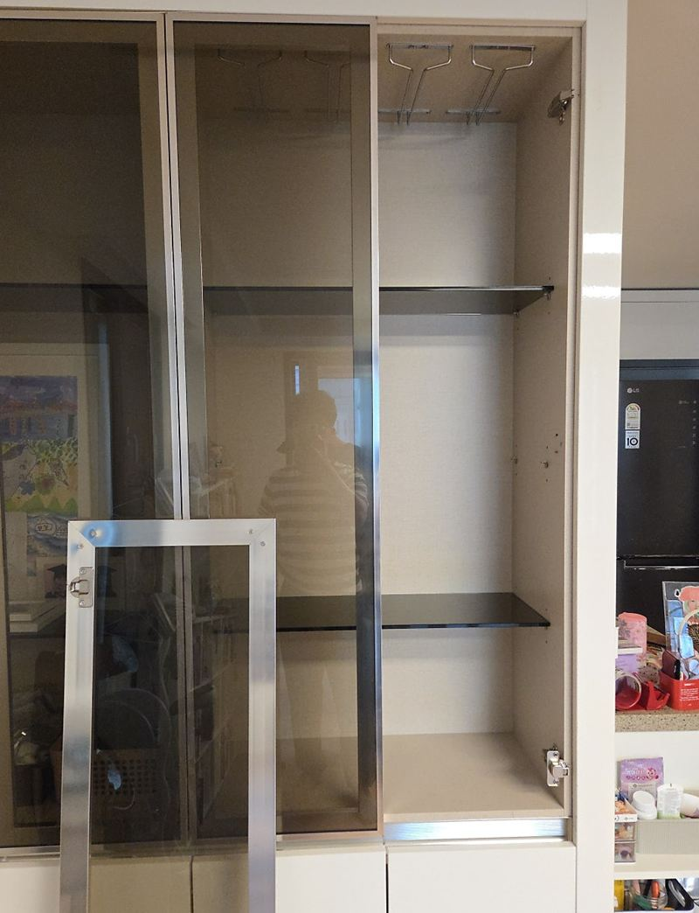
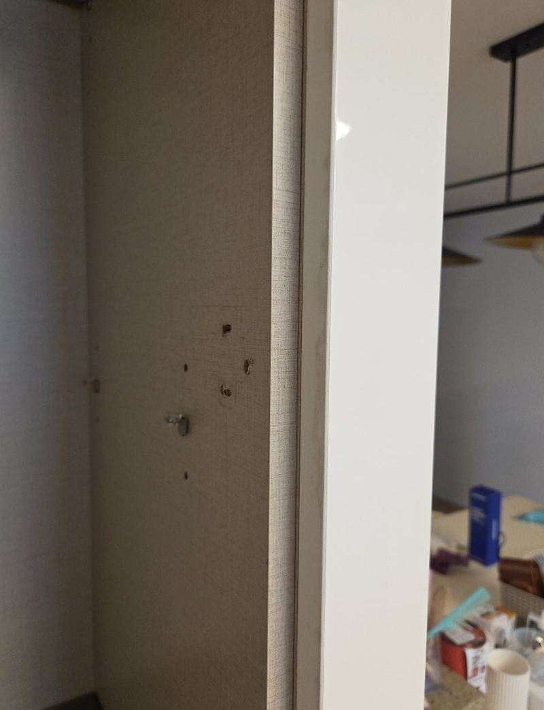
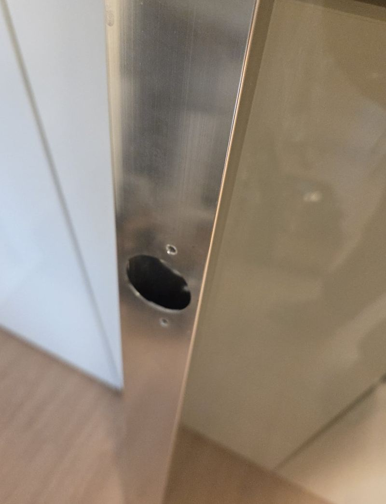
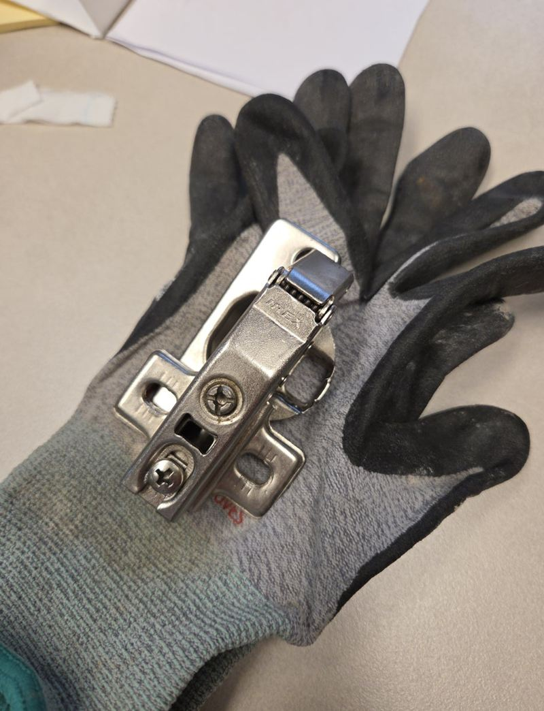
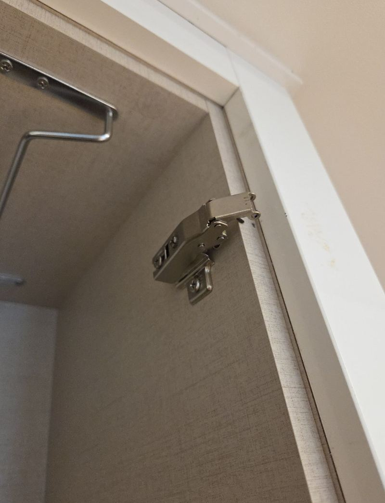
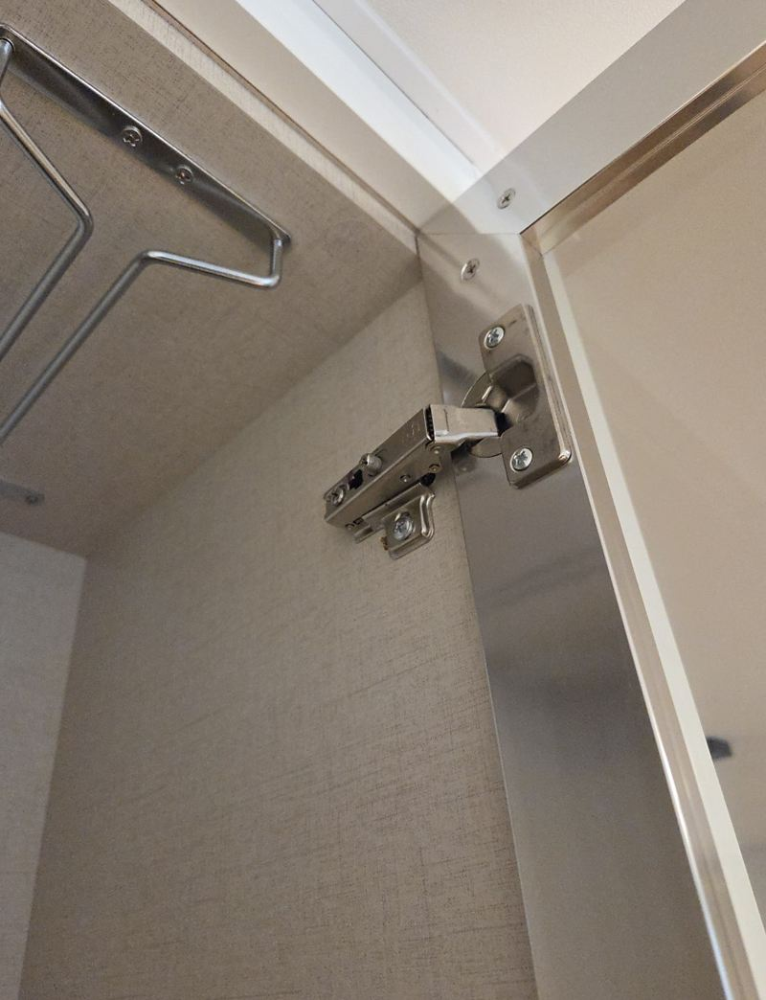
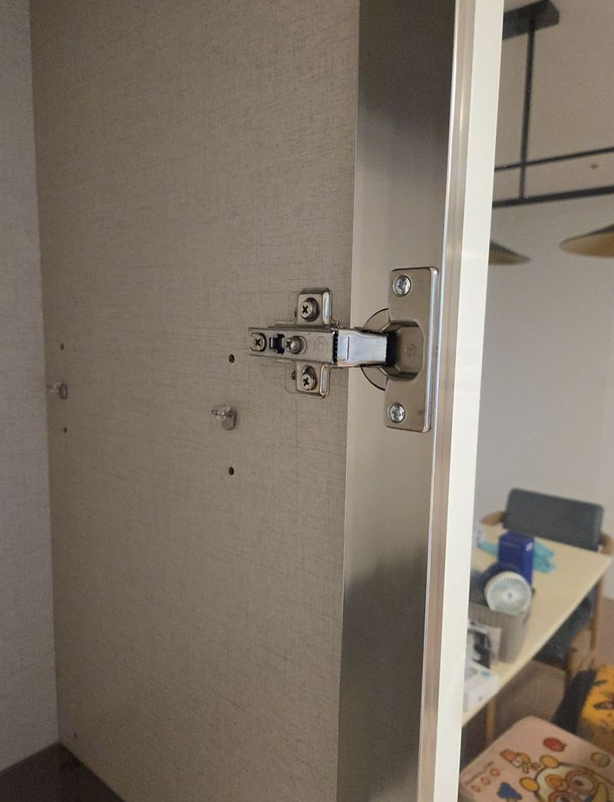

은평 장식장 유리문 처짐, 경첩 교체 비용

 수리 전수리 후
수리 전수리 후← 밀어서 전후 비교 →
"몇 번을 다시 달아도 얼마 안 가서 또 떨어질 것 같아요." 은평구 거실 장식장 유리문 하나가 고정되지 않아, 아예 떼어 놓고 지내던 집이었어요. 직접 여러 번 다시 끼워 보셨지만 매번 처지다 빠졌다고 하셨어요. 같은 자리를 다시 조이는 대신, 경첩을 새 부품으로 바꾸고 고정면이 버티는지까지 확인하며 높이와 간격을 맞췄어요.
| 현장 | 서울 은평구 가정집 거실 유리 장식장 |
|---|---|
| 증상 | 유리문이 처지다 빠짐, 여러 번 다시 달아도 반복 |
| 한 일 | 기존 부품·체결 자리 확인 → 경첩 교체 → 유리문 재설치 → 위아래 높이·좌우 간격 조정 → 반복 여닫이 확인 |
| 안내 | 가끔 경첩 조임 상태를 확인하면 갑자기 빠지는 일을 줄일 수 있음 |
유리문이 자꾸 처지는 이유
장식장 유리문은 같은 크기 나무 문보다 무거워요. 처음엔 잘 열리고 닫혀도, 열 때마다 그 무게가 경첩 나사 몇 개에 실려요. 시간이 지나면 나사가 조금씩 풀리고 나사 구멍이 넓어져 문이 한쪽으로 기울어요. 그 상태에서 같은 구멍에 다시 조이면 처음 며칠만 버티고 또 빠져요.


빠진 유리문 다시 다는 과정
왜 빠졌는지 확인
기존 부품이 닳았는지, 옆판 체결 자리가 헐거워졌는지 먼저 봤어요. 체결 자리가 넓어졌다면 구멍을 메우거나 보강대를 대고 다시 고정해야 해요.

경첩 교체
새 경첩을 옆판에 달았어요. 유리문이 무거워 다루는 동안 한쪽으로 쏠리지 않게 잡고 작업했어요.


높이·간격 맞추기
유리문을 걸고 위아래 높이와 옆 문과의 간격을 맞췄어요. 한쪽이 조금만 내려가도 옆 문과 부딪히고 다시 처지기 시작해요.

여러 번 열고 닫기
다 달았을 때보다 쓰는 동안 흔들리지 않는지가 중요해요. 여러 번 열고 닫으며 움직임을 확인했어요.
경첩 교체 비용이 달라지는 것
- 문 크기와 무게큰 유리문일수록 경첩 개수와 규격이 달라져요.
- 부품 교체 여부조정만으로 되는지, 새 경첩이 필요한지에 따라 달라요.
- 체결 자리 손상구멍을 메우거나 보강대를 대야 하면 손이 더 가요.
- 문 개수같은 장의 다른 문도 처지기 시작했다면 함께 보는 게 좋아요.
여러 번 직접 끼워도 늘 불안하셨다는 고객분은, 이제야 문이 제대로 붙어 있는 것 같다며 안심하셨어요. 문을 떼어 두는 동안 수납물 꺼낼 때마다 신경 쓰였는데, 장식장 앞이 다시 정리됐어요.
유리문 처짐, 미리 막는 법
- 가끔 조여 주기경첩 나사가 조금 풀렸을 때 조이면 구멍이 넓어지기 전에 잡을 수 있어요.
- 문에 기대지 않기열린 유리문에 손을 짚거나 물건을 걸면 경첩에 큰 힘이 가요.
- 처음 기울 때 연락문 끝이 옆 문보다 내려가 보이면 그때가 손보기 쉬운 시기예요.
장식장 유리문 질문
직접 다시 끼워도 되나요?
유리문은 무거워 잘못 잡으면 떨어지거나 모서리가 깨져요. 여러 번 빠졌다면 맡기는 게 안전해요.
유리가 깨졌어요.
같은 크기로 유리를 새로 맞춰 넣을 수 있어요. 프레임이 있는 문인지 통유리인지 알려주세요.
문이 닫혀도 툭 튀어나와요.
경첩 깊이 조절로 맞추는 경우가 많아요. 경첩이 상했으면 바꿔요.
신발장·수납장 문도 되나요?
같은 컵경첩을 쓰는 문이면 방법이 같아요.
소프트 클로징으로 바꿀 수 있나요?
규격이 맞으면 천천히 닫히는 경첩으로 바꿀 수 있어요.
사진으로 먼저 볼 수 있나요?
장식장 전체, 빠진 문, 헐거운 체결 자리 사진이면 방향을 먼저 말씀드려요.
경첩 구멍이 너무 커졌어요.
구멍을 메우고 다시 뚫거나, 보강판을 덧대 새 자리에 고정해요.
유리문 두 짝이 높이가 달라요.
경첩 높이 조절 나사로 맞추는 경우가 많아요. 휘었으면 부품을 바꿔요.
다른 유리문 현장
처진 문과 경첩이 달린 옆판을 가까이 찍어 보내 주세요.
전화 상담 010-4517-9872